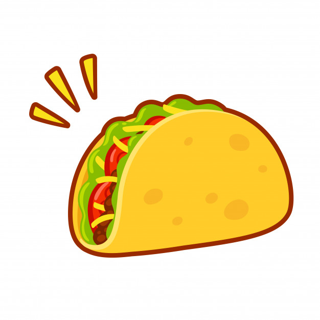

Welcome to Benji's Taco's!
| Baja Shrimp Taco! | Double Decker Shell Taco! | Soft Shell Steak Tacos! |
| Enjoy our classic Baja Shrimp Taco and switch it up by enjoying our grilled shrimp with our creamy baja sause made with the finest ingredients! | Cant decide if you want a soft or hard shell taco? Well we made the choice easy for you and put them both together for a mix of soft and crunchy with every bite! | For those who want a tender juice bite of steak that tastes so good cows are honored to be about of this meal! Made in packs of two or three and comes with a side of lime! |

|

|
Click this taco  to see my GitHub!